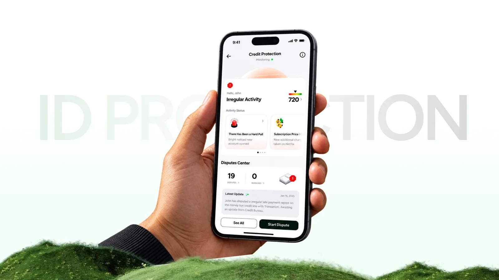
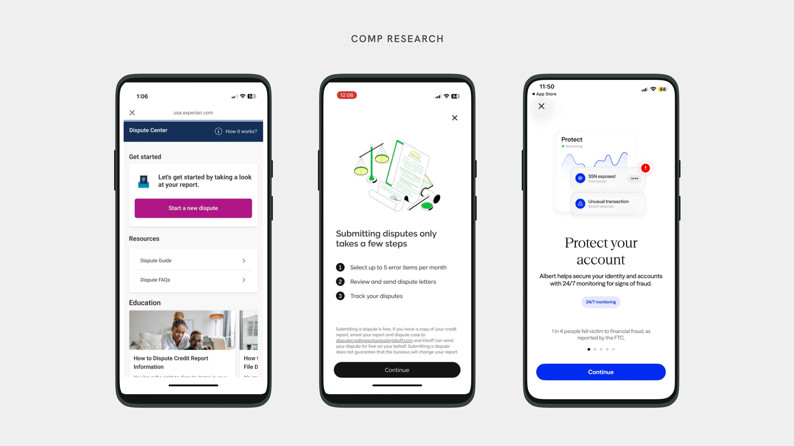
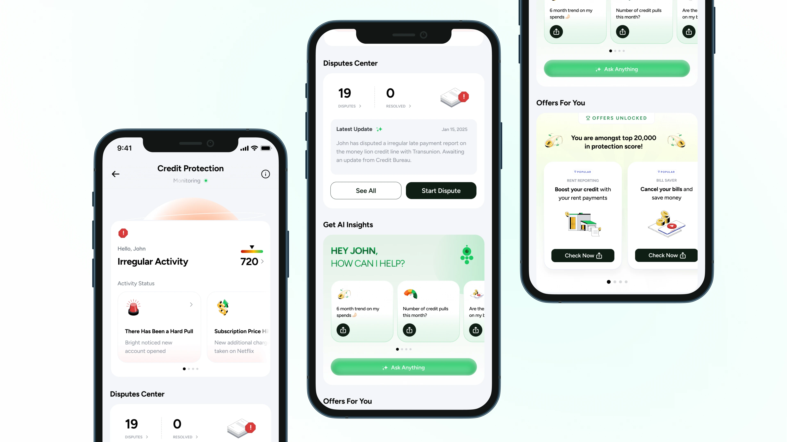
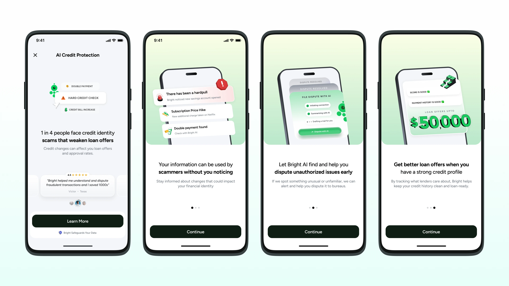
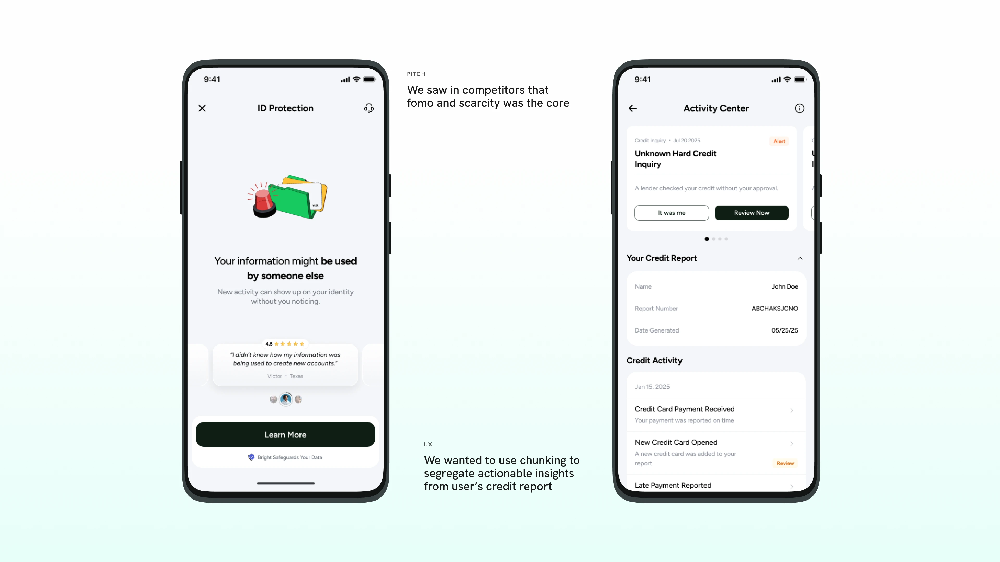
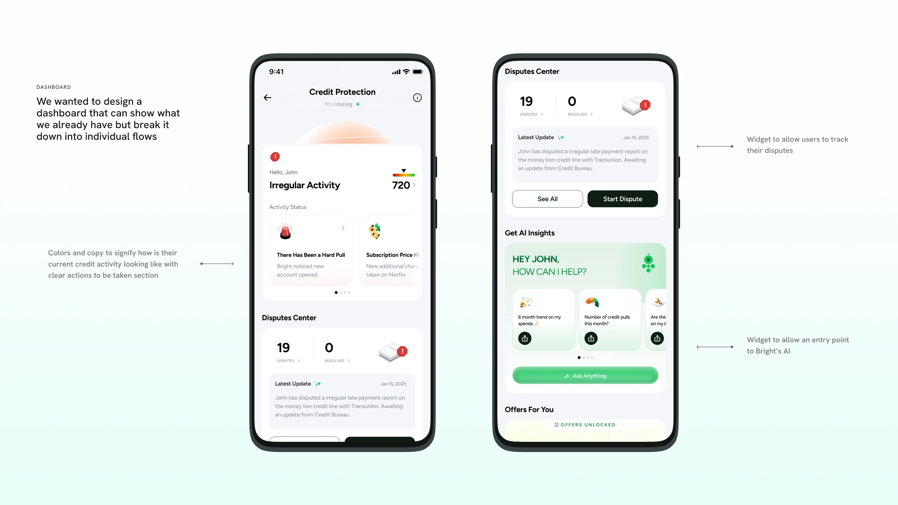
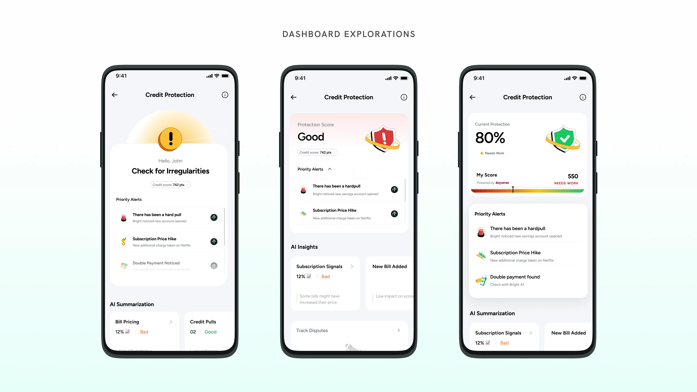
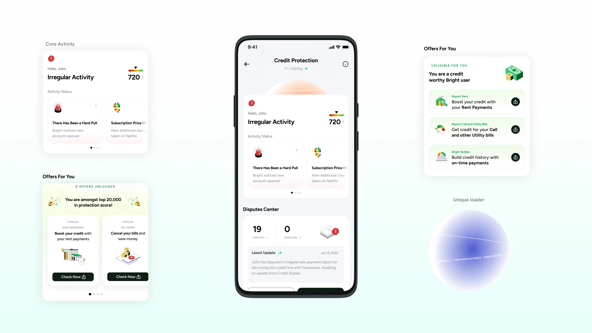
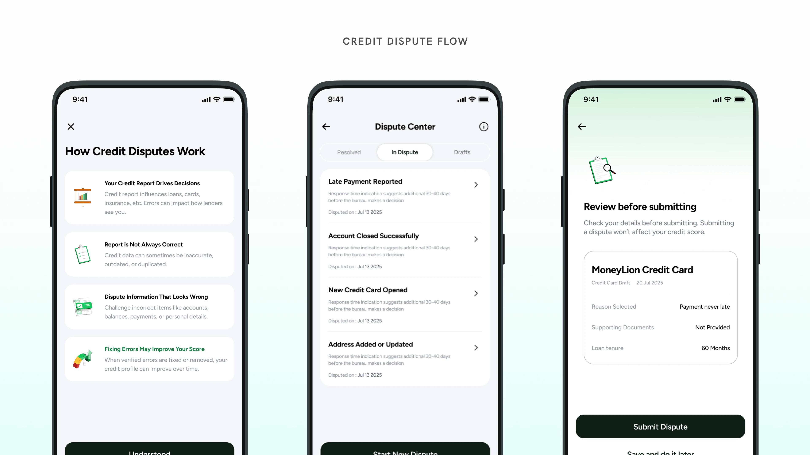

ID Protection
Every major competitor sold identity protection and we did not. I researched the gap and pitched a product to the founder: the business model, the full UX and a dispute flow.

Overview
A product pitch built from data we already held.
Problem
Every major competitor sold identity protection. We were an app built to improve users' credit, and we had no monitoring surface.
My part
I led the research, built the business model and pricing logic, and designed the full UX including a dispute flow. I prototyped it in Google AI Studio.
Result
Pitched to the founder. It did not move forward. The research, the business model and the UX are ready if it returns to the roadmap.
Context
Competitors all had it. We had the data and no product.
In US fintech, ID Protection is a standard category: credit monitoring, breach alerts, identity theft detection, dispute tools. The premise is that your financial identity is exposed in more places than you track, and a financial app is the right place to surface when something changes.
We didn't have it. For an app built around improving users' credit and financial health, that was a visible gap.
I started with a different question: what are we missing? I mapped Acorns, Chime, MoneyLion, Kikoff, Aura and others, found what most of them shared, and filtered it against our user base, our business model and the infrastructure we already had.
ID Protection was the strongest gap. It was a competitor staple, and the user profile fit: people rebuilding credit with thin files, financially vulnerable in ways that make identity monitoring useful.

Competitor research: how others handle disputes and identity monitoring.
Approach
I pitched a product, and built it from what already existed.
Three things set the brief I gave myself. Each one led to a decision.
Solution
The pitch covered the product, the price and every screen.
I built the business model logic and pricing structure, and what monetization looks like. Alongside that I designed the complete UX: onboarding, the introduction story, the dashboard and every state in it, edge cases, UX copy for every screen, and marketing copy tight enough to introduce the product externally.

The Credit Protection dashboard, top to bottom.

Introduction story: the risk, the dispute, and the loan offers it protects.
How the screens were reasoned.

The pitch screen, and the Activity Center that chunks the credit report into actions.

Dashboard, annotated.

Dashboard explorations.

The dashboard and its components: core activity, offers, and the loader.
Dispute flow
The dispute flow carried the case.
Users can have errors on their credit report, and those errors suppress their score. A path to dispute them from inside the app directly helps the score improve.
That makes the dispute flow a direct extension of what the product already exists to do, not a feature add. It gives users a reason to stay in the app and engage with monitoring over time, and it ties the monetization back to the outcome users already pay us to deliver.

Credit dispute flow: how disputes work, the Dispute Center, and review before submitting.
Outcome
The pitch reached the founder and stopped there.
The product didn't move forward.
That outcome doesn't undo the work. The research mapped a real gap, the business model logic held, and the UX showed the product was buildable on existing infrastructure. If ID Protection returns to the roadmap, the foundation is there.
A pitch that doesn't ship still informed a real product decision.
Takeaways
What I would do differently.
- Narrow the comparison set earlier. Not all competitors were the right analogue for our user profile. Tighter scope would have sharpened the business case faster.
- Give the dispute flow more room in the pitch. It ties directly to credit score improvement, our core outcome, so it belonged at the front and not as a supporting detail. That argument makes the product feel native to us, not borrowed from a competitor's feature list.
- Prototype earlier. The Google AI Studio prototype was the right call: stakeholders saw the product before they were asked to approve it. I would do that sooner on every 0→1 project.